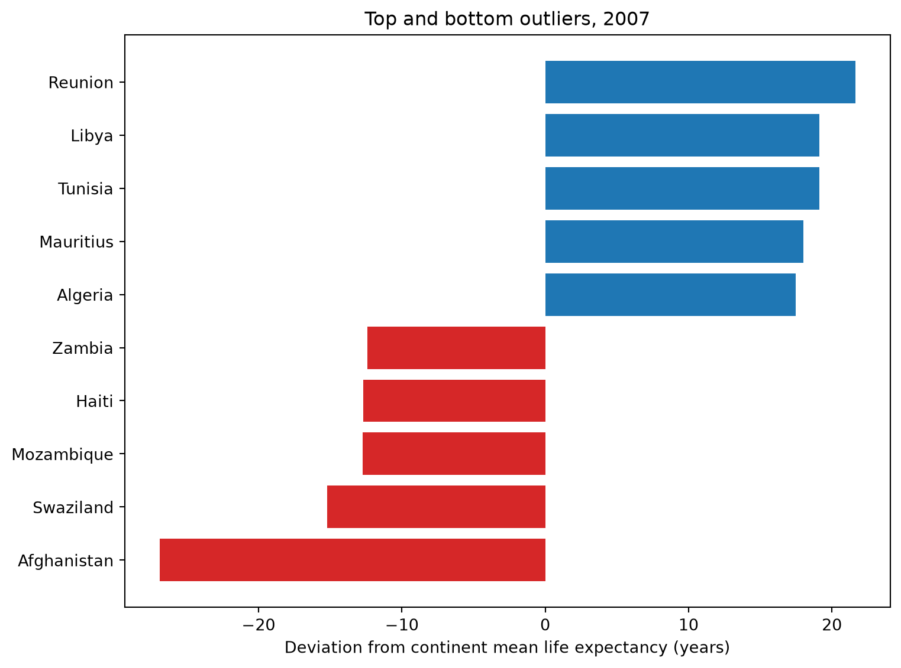

Most treatments of the Gapminder dataset lean on Hans Rosling’s well-known global scatterplot: as income rises, so does life expectancy. That chart is compelling, but it flattens the whole world into a single trend line, hiding a lot of variation within continents. This post narrows the lens. By 2007, which countries diverged most from their own continent’s average life expectancy? Comparing each country to its regional peers, rather than to the world, surfaces both standout performers and the countries falling furthest behind, patterns the global view conceals.
import pandas as pdimport matplotlib.pyplot as pltimport plotly.express as pxgapminder = px.data.gapminder()gapminder.head()
country
continent
year
lifeExp
pop
gdpPercap
iso_alpha
iso_num
0
Afghanistan
Asia
1952
28.801
8425333
779.445314
AFG
4
1
Afghanistan
Asia
1957
30.332
9240934
820.853030
AFG
4
2
Afghanistan
Asia
1962
31.997
10267083
853.100710
AFG
4
3
Afghanistan
Asia
1967
34.020
11537966
836.197138
AFG
4
4
Afghanistan
Asia
1972
36.088
13079460
739.981106
AFG
4
Continent-level trends
First, the average life expectancy trajectory for each continent, by year.
fig, ax = plt.subplots(figsize=(8, 6))colors = ["tab:red"if d <0else"tab:blue"for d in outliers["deviation"]]ax.barh(outliers["country"], outliers["deviation"], color = colors)ax.set_xlabel("Deviation from continent mean life expectancy (years)")ax.set_title("Top and bottom outliers, 2007")plt.tight_layout()plt.show()

Figure 1: Countries whose 2007 life expectancy deviated most from their continent’s average.
Discussion
The five largest negative deviations are Afghanistan (26.9 years below the Asian average), and four countries roughly 12 to 15 years below their own continental mean: Swaziland, Mozambique, and Zambia in Africa, and Haiti in the Americas. Afghanistan’s gap is the most extreme in the dataset, close to double the next-largest deviation, likely reflecting decades of conflict that a continent-wide average does not capture.
The more notable result is that all five top positive outliers are African: Réunion, Libya, Tunisia, Mauritius, and Algeria each sit 17 to 22 years above the African mean. A single “African average” hides this pattern entirely. The continent contains both the best and worst performing countries relative to their peers. The high performers share some structural traits: North African or Mediterranean geography for Libya, Tunisia, and Algeria, and island status for Réunion and Mauritius. This suggests geography and trade access may matter as much as continental identity, though this analysis does not test that causally.